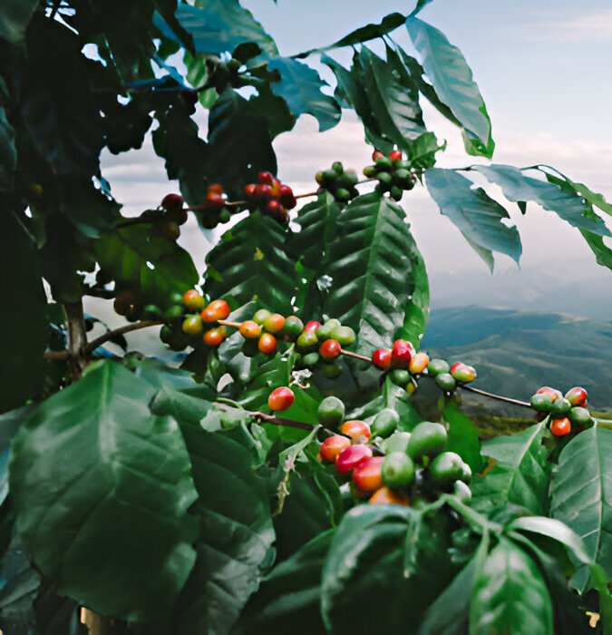
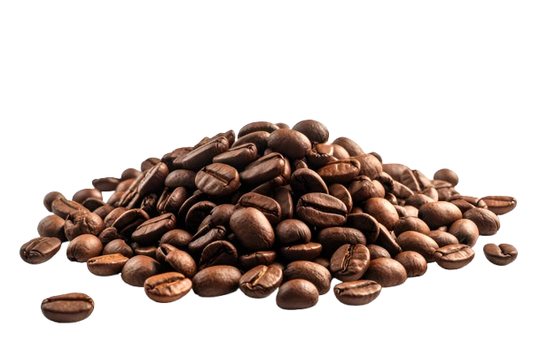
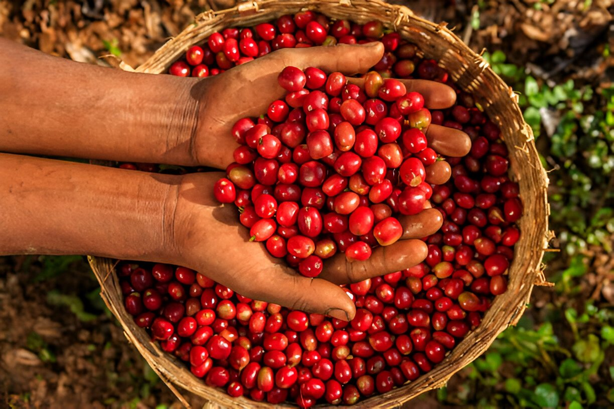

Rwenzori coffee
Grown in volcanic soils along the slopes of Mount Rwenzori in western Uganda.
Enquire about this coffee ↗Our coffee
Explore our Ugandan origins and four coffee preparations: washed Arabica, natural Arabica, natural Robusta and washed Robusta.

Our Ugandan coffees

Grown in volcanic soils along the slopes of Mount Rwenzori in western Uganda.
Enquire about this coffee ↗Grown on the slopes of Mount Muhavura. Lively acidity, a creamy mouthfeel, sweet flavour and a pleasantly lingering aftertaste.
Enquire about this coffee ↗Grown in the southwestern highlands. A well-balanced cup with crisp acidity, a smooth mouthfeel and rich flavour.
Enquire about this coffee ↗Fully washed Arabica grown in volcanic soils on the slopes of Mount Elgon. A round-bodied brew with complex flavour, lively acidity and a pleasant lingering finish.
Enquire about this coffee ↗Grown in the eastern highlands. A smooth body, sweet flavour, refined acidity and a pleasantly lingering aftertaste.
Enquire about this coffee ↗Scroll to explore the five origins →

Harvest / selectionOur products